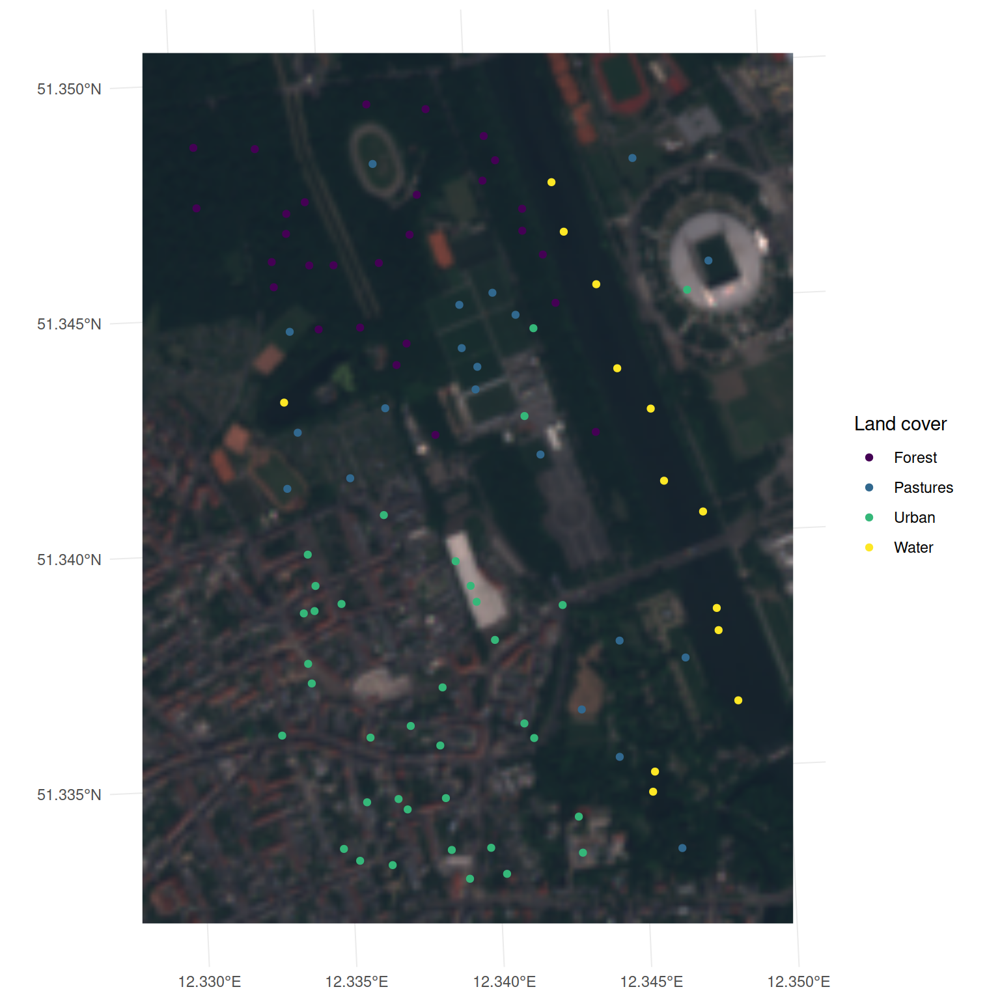
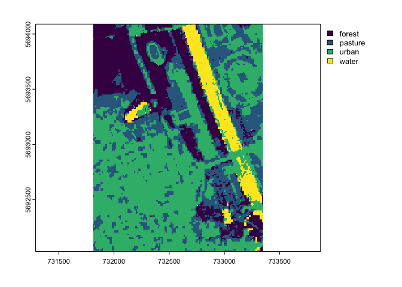

Package website: release | dev
{mlr3spatial} is an extension package for spatial objects within the mlr3 ecosystem.
Feature Overview
- Read training data from sf objects.
- Predict on raster objects from the packages {terra}, {raster} and {stars}.
- Write model predictions to raster files.
- Predict large raster objects in parallel.
- Read raster objects in chunks to avoid memory issues.
- Built-in toy task
leipzig.
Check out {mlr3spatiotempcv} for spatiotemporal resampling within mlr3.
Installation
Install the last release from CRAN:
install.packages("mlr3spatial")Install the development version from GitHub:
remotes::install_github("mlr-org/mlr3spatial")Example
library(mlr3)
library(mlr3spatial)
library(terra, exclude = "resample")
library(sf)
# load sample points
leipzig_vector = read_sf(system.file("extdata", "leipzig_points.gpkg",
package = "mlr3spatial"), stringsAsFactors = TRUE)
# create land cover task
task = as_task_classif_st(leipzig_vector, target = "land_cover")
task## <TaskClassifST:leipzig_vector> (97 x 9)
## * Target: land_cover
## * Properties: multiclass
## * Features (8):
## - dbl (8): b02, b03, b04, b06, b07, b08, b11, ndvi
## * Coordinates:
## X Y
## 1: 732480.1 5693957
## 2: 732217.4 5692769
## 3: 732737.2 5692469
## 4: 733169.3 5692777
## 5: 732202.2 5692644
## ---
## 93: 733018.7 5692342
## 94: 732551.4 5692887
## 95: 732520.4 5692589
## 96: 732542.2 5692204
## 97: 732437.8 5692300
# create learner
learner = lrn("classif.rpart")
# train the model
learner$train(task)
# load raster file
leipzig_raster = rast(system.file("extdata", "leipzig_raster.tif", package = "mlr3spatial"))
plotRGB(leipzig_raster, r = 3, g = 2, b = 1)
# create prediction task
task_predict = as_task_unsupervised(leipzig_raster)
# predict land cover map
land_cover = predict_spatial(task_predict, learner)
plot(land_cover, col = c("#440154FF", "#443A83FF", "#31688EFF",
"#21908CFF", "#35B779FF", "#8FD744FF", "#FDE725FF"))
FAQ
Will mlr3spatial support spatial learners?
Eventually. It is not yet clear whether these would live in mlr3extralearners or in {mlr3spatial}. So far there are none yet.
Why are there two packages, {mlr3spatial} and {mlr3spatiotempcv}?
mlr3spatiotempcv is solely devoted to resampling techniques. There are quite a few and keeping packages small is one of the development philosophies of the mlr3 framework. Also back in the days when mlr3spatiotempcv was developed it was not yet clear how we want to structure additional spatial components such as prediction support for spatial classes and so on.